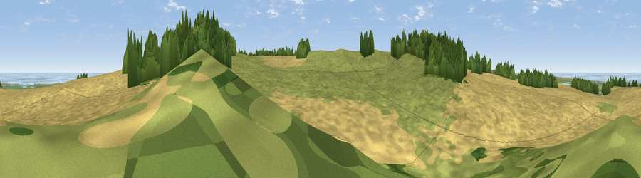

Great Hulver Hill
#14411 in England · top 32% of its area beats it · near SalthouseThe view, rendered

A 360° render of this exact spot computed from the terrain model, tree cover and land cover — summer colours, afternoon light, calibrated against photographs of famous viewpoints. Real trees, hedges and buildings will differ in detail.
The panorama
Grey silhouette: terrain skyline in each direction (720 bearings, Earth curvature and refraction included). Dashed green: skyline with trees (+15 m) and buildings (+8 m) as obstacles. Blue strip: how far the ground is visible on each bearing.
Where the view opens
Wedge length = distance to the farthest visible ground on that bearing (vegetation-aware). Rings at 10, 25 and 50 km.
What fills the view
48% cropland · 37% grassland · 9% woodland · 5% water · 1% wetland
Angular shares of the visible panorama (visual magnitude), not map area. Landscape diversity 0.50 (0–1 Shannon).
Key numbers
More beautiful places nearby
The staircase of upgrades: each row has a higher view potential than everything closer. Driving times are estimates from straight-line distance, calibrated against real road routing — check an actual route before setting out.
| Place | Direction | Drive | Score |
|---|---|---|---|
| Viewpoint near Salthouse | WSW · 0 km | ~2 min | 65.4 |
| Viewpoint near Weybourne | ESE · 4 km | ~9 min | 68.3 |
| Viewpoint near Claxby | WNW · 108 km | ~133 min | 71.5 |
| Viewpoint near Bempton | NNW · 157 km | ~179 min | 72.8 |
| Broombriggs Hill | W · 157 km | ~180 min | 74.4 |
| Viewpoint near Woodhouse Eaves | W · 158 km | ~180 min | 77.7 |
| Viewpoint near Speeton | NNW · 160 km | ~182 min | 80.0 |
| Olivers Mount | NNW · 176 km | ~197 min | 80.3 |
52.94685, 1.07108 · source: osm peak · position refined by local search. Computed location — check access rights before visiting.